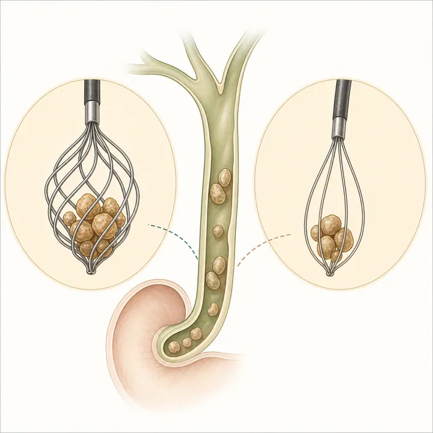

Endoscopy / IF 11.8 / Q1Multicenter randomized trialPMID: 42526878
日本語: 8 mm以下の総胆管結石200例を、spiral型または標準8-wire basketに無作為化しました。挿入可能例で10分以内・追加デバイスなしの初回手技成功は97.9%対85.4%（p=0.004、NNT 8）で、spiral群はsweep回数、処置時間、デバイス費も少なく、有害事象は同等でした。最終完全採石率の優越性やballoonとの比較を示す試験ではない点に注意が必要です。
English: In this multicenter randomized trial, a spiral 8-wire basket improved first-line procedural success without device escalation for stones ≤8 mm (97.9% vs 85.4%; NNT 8), while reducing sweeps, procedure time, and device costs. Final clearance and adverse events were similar, and balloon extraction was not tested.
